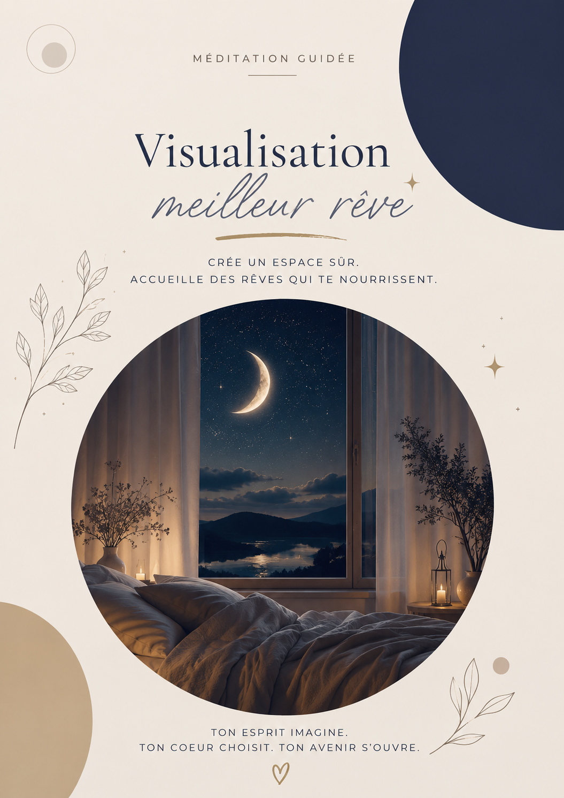

🎧 Méditations guidées
Le cerveau apprend aussi par l'imagination.
Ces méditations ont été créées à partir de mes connaissances en neurosciences, en accompagnement au changement et en hypnose Ericksonienne. Elles ont pour objectif d'aider votre système nerveux à retrouver progressivement davantage de sécurité, de calme et de sérénité.
Je suis Laetitia Brussier. Coach en neurosciences. Formatrice pour adultes agréée d'État. Praticienne en Ennéagramme. Maître praticienne en hypnose Ericksonienne.
Pourquoi les méditations fonctionnent-elles ?
Le cerveau ne fait pas toujours la différence entre une expérience réellement vécue et une expérience profondément imaginée.
Lorsque vous visualisez, ressentez et répétez certaines expériences, vous envoyez de nouveaux messages à votre système nerveux.
La répétition permet progressivement de créer de nouveaux chemins neuronaux.
La sécurité se réapprend.
🎧 Méditations guidées

|
🍵 Méditation du théOffrez à votre système nerveux une véritable pause. Une méditation guidée de 27 minutes pour ralentir, retrouver de la sécurité intérieure et commencer à sortir du mode survie. Votre enfant intérieur, vous adulte, et votre version chamane autour d'un feu à rire de votre vie. Venez faire la paix. 9 € 🍵 Acheter la méditation – 9 € |
|
 |
✨ Visualisation de votre meilleure vieInstallez-vous confortablement et laissez votre cerveau explorer une version plus apaisée, plus alignée et plus vivante de votre futur. Une méditation guidée d'une 20 aine de minutes pour nourrir l'espoir, activer la projection positive et ouvrir doucement de nouveaux possibles. 9 € ✨ Acheter la visualisation – 9 € |
Tu n'as pas besoin de tout changer aujourd'hui.
Tu peux simplement commencer.